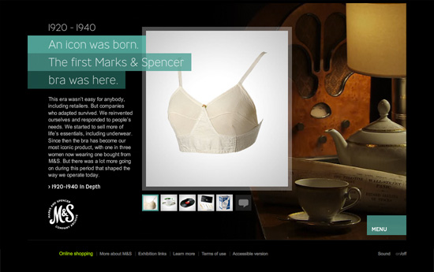
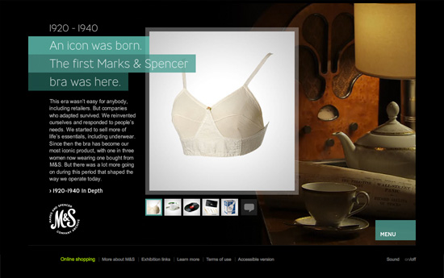

Marks & Spencer 125th Anniversary
front-end development / 2009
 

M&S micro site - celebrate 125th Anniversary with one of the UK's leading retailers
Goal of the project
Create a micro site to celebrate the 125th anniversary of the company. This microsite should introduce the visitor to different eras in the company's history with its typical products. It should also highlight events, which were related to the celebration.
Description of the solution
Our client approached us about designing a vibrant, inviting and visually attractive style of website that would target all users who were looking for more information about this very special event. We used imagery that was at once elegant and unconventional together with rich interactions and animations.
My work on this project
My personal responsibility as a part of LBi team on this project was for all the front-end production on this site: specifically this involved HTML, CSS and JavaScript. I worked closely with designers, Flash and backend developers. Also helped with estimations for timing of deliverables.